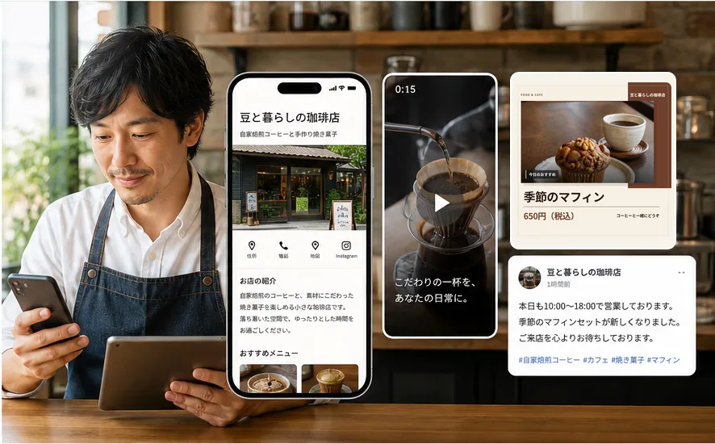

MAMEAD / WEB SERVICEPROFILE / WHAT I CAN OWN
コードの調査から、任せてください。
IT実務経験は約15年。既存システムの調査から、新しいWebサービス・アプリの公開まで取り組んできました。
IT実務経験：約15年（2026年8月時点）
任せられる仕事
- 01既存PHP・Laravelの調査と改修
画面・コード・DBを確認し、曖昧な仕様を整理して変更します。
- 02データ移行と整合性の確認
CSV仕様、旧データ、新DB設計を突き合わせて移行します。
- 03Flutterアプリの開発・公開
iOS・Androidの実装、テスト、ストア申請・更新まで対応します。
01 / SELECTED WORK
公開している、開発の実例。
画面の裏側にある設計、保存、通信、テストまで担当しています。
MOBILE APPLICATIONS
Flutterの実装内容を見る iOS・Androidで公開した3本


APP / 02
いつでもクラシック
クラシック音楽を選んで再生。楽曲のダウンロードとオフライン再生に対応。
Flutter · 音声再生 · オフライン保存

APP / 03
金庫スプリント
ダイヤル操作で金庫を開けるゲーム。オンラインランキングと金庫の作成・共有にも対応。
Flutter · SQLite · Supabase
02 / WEB TOOLS
小さな課題を、使えるツールに。
用途ごとに必要な機能を切り出し、公開後の運用まで続けています。
08本
SEO・ホームページ診断
検索表示、問い合わせ導線、表示速度、構造化データなどを確認する無料ツール群。
09本
MEO・地域集客診断
店舗情報の一致、地域キーワード、地図連携、来店前の案内を確認する無料ツール群。
13件
小規模Webサービス
在庫、原価、店舗チェックなど、日々の業務にある小さな作業をWebサービスとして公開。
03 / SKILLS & PRACTICE
技術を、何に使ったか。
言語の一覧だけでなく、実際の設計・実装・公開につながる経験として整理しました。
Webシステム
業務の流れや既存データを確認し、画面・API・DBを設計。Queueを使う非同期処理や公開後の管理にも対応します。
モバイルアプリ
編集、音楽再生、ゲームなど異なる操作を設計。端末保存、外部サービスとの通信、ストア申請・更新まで対応します。
品質と運用
保存・通信・権限・失敗時の動作を確認。テスト、静的解析、自動デプロイを使って変更の影響を確かめます。
04 / APPROACH
曖昧な仕様も、整理して進める。
動いているシステムを変えるときほど、まず現在の状態を確かめます。既存画面、コード、データ、運用の流れを照らし合わせ、必要な変更を決めます。
実装事例で確認する- 01
現状を読み解く
業務、既存コード、実データと仕様の食い違いを確認。
- 02
変更範囲を決める
使う人の操作、優先順位、失敗時の動作を整理。
- 03
作って、確かめる
小さな単位で実装し、テストと実画面で検証。
- 04
公開後も見直す
不具合や使いにくさを調べ、運用しながら改善。
05 / CONTACT
開発のご相談は、こちらから。
既存システムの改修、データ移行、新規Webサービス、iOS・Androidアプリ開発。仕様が固まりきっていない段階から、必要な範囲を整理します。